Шаг 1: берем картофель.
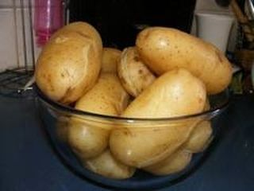
Берем картофель, очищаем его при помощи овощечистки от кожуры, моем тщательно под проточной водой и кладем в небольшую кастрюлю. Заливаем воду в кастрюльку так, чтобы она покрыла картофель, солим воду и ставим на большой огонь. Когда вода закипит, делаем огонь умеренным, а кастрюлю накрываем крышкой. Варим картофель минут 20-25.
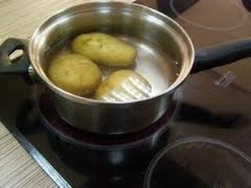
Затем проверяем его на полную готовность деревянной зубочисткой и если картофель готов, то она у нас будет вонзаться в картофель свободно. Затем сливаем воду с кастрюли в раковину.
Шаг 2: берем морковь.
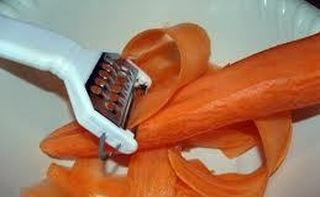
Берем морковь, очищаем ее от кожуры ножом или картофелечисткой, моем, промакиваем бумажными полотенцами, чтобы убрать излишки воды и натираем на крупной терке. Затем берем небольшую сковороду с антипригарным покрытием, наливаем туда немного масла растительного и ставим на большой огонь.
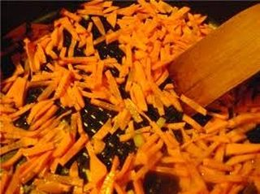
Когда масло на сковороде разогреется, всыпаем туда потертую морковь, делаем огонь умеренным и постоянно помешивая деревянной лопаткой для переворачивания слегка обжариваем. Готовую морковь из сковороды выкладываем в небольшую миску. Сковороду моем и сушим.
Шаг 3: берем лук репчатый.
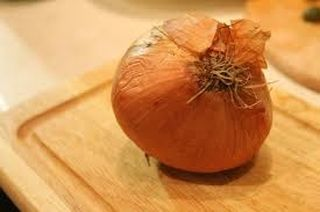
Репчатый лук очищаем ножом от кожуры, моем под проточной холодной водой, обмакиваем слегка бумажными полотенцами и на разделочной нарезаем небольшими кубиками. Берем сухую сковороду, можете использовать ту же сковороду, на которой предварительно поджаривалась наша морковь. Наливаем туда немного растительного масла и ставим на большой огонь.
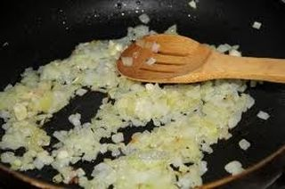
Когда масло закипит и начнет шипеть, выкладываем на сковороду порезанный репчатый лук и при помощи лопатки для переворачивания поджариваем его на среднем огне до золотистого цвета.
Шаг 4: варим куриные яйца.
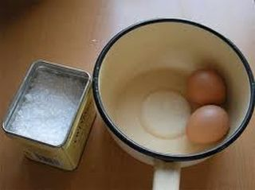
В небольшую кружку наливаем холодную воду и выкладываем куриные яйца. Вода должна полностью покрыть яйца. Добавляем сюда 1-2 столовые ложки соли кухонной и 1-2 столовые ложки уксуса 9%. Это делается для того, чтобы в процессе варки наши яйца не полопались, а потом еще и чистились от скорлупы хорошо. Ставим кружку на большой огонь и ждем пока вода закипит. Когда вода закипит, делаем уровень огня небольшим и варим так яйца, ничем не накрывая, минут 15-17.
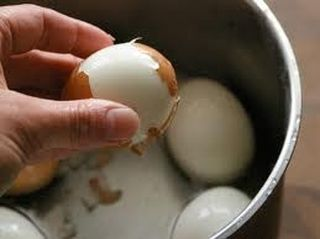
Теперь, когда он у нас сварились, сливаем воду с кружки с варенными яйцами и ставим их под проточную холодную воду, чтобы остудить. Полностью остывшие яйца очищаем от скорлупы и выкладываем на разделочную доску.
Шаг 5: чистим и режим селедку.
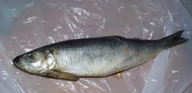
Как чистить селедку одним движением можете посмотреть здесь. Ну, а я расскажу как этому меня учила моя мама. Итак, сначала снимаем всю шкуру с селедки (голову мы пока не отрезаем), после этого, делаем одним сильным движем разрез по длине брюха от такой "дырочке" на брюшке к голове. Вот именно с нее и начинайте это делать.
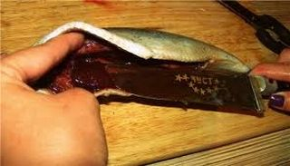
Разрез этот должен быть сильно глубоким, практически до самого ротового отверстия. Затем отделив сами жабры от головы сельди, Вы тяните за эти самые жабры, и вместе с ними у вас выйдут все грязные внутренности рыбы, а все самое съедобное (икра или молоко) останется при этом чистым.
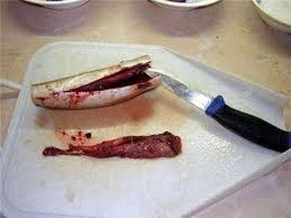
На самом деле это делать очень легко, просто нужно попробовать пару раз так сделать. Затем отрезаем голову, плавники и хвост. После "вытаскивания всех внутренностей" я засовываю свою руку в брюхо к селедке и разделяю внутри ее вдоль хребта. Позвоночник сельди при этом выходит целиком, а все боковые косточки, ребрышки становятся хорошо видны, и их можно оттуда вытащить руками либо применить пинцет.
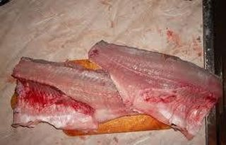
Затем филе я мою в холодной воде, промакиваю слегка бумажными полотенцами и затем уже мелко нарезаем филе сельди на доске разделочной.
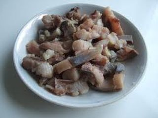
Порезанное филе сельди затем следует высыпать в отдельную миску.
Шаг 6: берем банку с грибами.
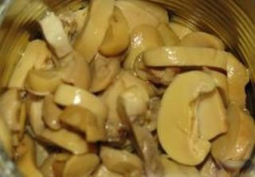
Открываем банку с шампиньонами, сливаем из нее воду, а лучше всего сразу же откинуть грибы на дуршлаг и промыть под холодной проточной водой. Затем вынуть все специи из них (горошек, лавровый лист) и высыпать грибы в отдельную миску.
Шаг 7: собираем салат.
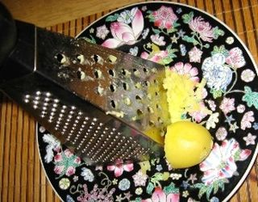
Так как этот салат делается слоями, то нам понадобится вместительная сервировочная тарелка.
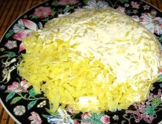
Первым слоем у нас идет картофель, который следует натёреть на крупной терке прямо на сервировочном блюде, руками размять и прижать так, чтобы получился блин. Затем промазать хорошо сверху майонезом.
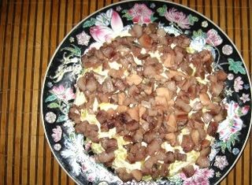
Вторым слоем укладываем нарезанная кусочками селёдка поверх картофеля с майонезом. Можете сверху помазать ее майонезом.
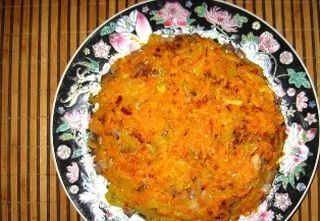
Третьим слоем укладывается часть обжаренного лука с морковкой. Вторую часть морковки с луком пока отставляем, она нам еще понадобиться.
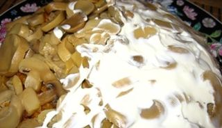
Четвёртым слоем выкладываем шампиньоны, которые промазываем хорошенько майонезом.
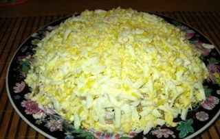
Пятым слоем выкладываем куриные яйца, которые следует натереть на крупной терке.
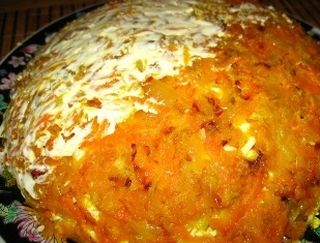
Шестым, и последним слоем выкладываем вторую часть лука с морковкой, который следует промазать очень тонким слоем майонеза. Затем ставим салат на пару часов в холодильник или какое-то прохладное место на пропитку.